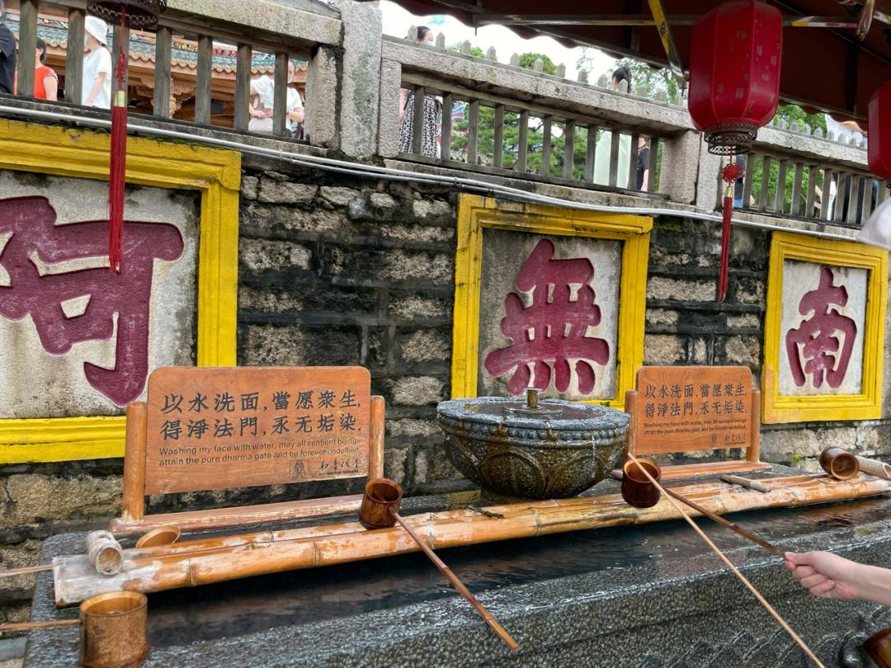

世遗探秘之旅
- 行程天数 1日游
- 目的地 厦门
- 线路类型 其他
- 推荐指数 ★★★★★★
- 行程特色 世遗探秘之旅
行程概要
线路介绍
一天游 鼓浪屿- -南普陀寺- -厦门大学
行程安排
游览【鼓浪屿】，作为厦门岛屿中的一颗明珠，鼓浪屿是一个集“自然风光、人文景观、历史遗迹、园林花景、奇石异洞”于一身的世界文化遗产。在这里你可以体会到岛上建筑的海风特色，还能欣赏到不同风格的建筑和花园，有“琴上马嵬”、“日光岩”、“铁路邮轮”、“海月广场”等景点。
午餐品尝当地海鲜。
游览【南普陀寺】，南普陀寺是厦门最为著名的寺庙之一，于1930年依山而建，供奉观音菩萨。这里有高达三层楼高的大雄宝殿，还有“金殿降妖”、“地藏殿”等景点。除此之外，这里还有SasamQian佛教中心，是一个提供密集禅修和佛法研究的地方，人们常常来这里寻求精神力量。
走进【厦门大学】，厦门大学位于厦门的南普陀寺、华侨博物馆、白城沙滩、李嘉诚经济学院、国家农业部海洋渔业局，是一个融合海风文化、中外文化和校园文化的杰出代表。这里的建筑和海风文化非常特别，是传承厦门历史文化的一个佳地。
景点 · 南普陀寺
南普陀寺占地面积广阔，建筑风格古老，气韵悠长，它坐落在一座花园式风景区中，四周青山环绕，清泉涌流，真是一方清净之地。南普陀寺的建筑主体是大雄宝殿，高达三层楼高，气势非常宏伟。大雄宝殿是南普陀寺的精华所在，殿内供奉的是观音菩萨的铜像。殿内还摆放着刻有佛经的碑塔、一件名为“万人华严”的佛经、还有一个大型的转经轮，供游客们走到后面转动，庄严肃穆。 。
-  南普陀寺
-
 南普陀寺
南普陀寺
- 南普陀寺
温馨提示
1.本行程酒店正常办理入住时间均为14：00，若您于14：00之前到达，酒店如有空房即可安排入住，如没有您可以将行李先寄存在前台，自行外出游览再办理入住，抵达酒店后报预订人姓名，拿入住人证件 （成人请提供身份证原件等有效证件，儿童请出示户口本原件）办理入住手续。
2.标间/大床随机安排，如有特殊需求，请签约前与您的专属客服进行确认，尽量安排不保证
3.此接机服务非我公司专车，会有其他同时间抵达的客人一同搭乘，逐一送至酒店，请您见谅。
4.在厦住店中国籍旅客必须凭身份证办理入住，不支持护照等其他有效身份证件，请您务必使用身份证哦。
早餐：无； 午餐：有； 晚餐：无
出行须知
•为了您人身、财产的安全，请您避免在公开场合暴露贵重物品及大量现金。上街时需时刻看管好首饰、相机等随身物品。
•游泳、漂流、潜水、滑雪、溜冰、戏雪、冲浪、探险、热气球、高山索道等活动项目，均存在危险。参与前请根据自身条件，并充分参考当地相关部门及其它专业机构的相关公告和建议后量力而行。
•为确保锂电池的安全运输，避免发生不安全事件，我们友情提醒您，民航局将对旅客携带锂电池乘机进行严格检查。详情请参考 民航局关于旅客行李中携带"锂电池、充电宝"乘机规定的公告。
•乘坐国内航班的旅客，居民身份证过期不能继续使用。若有效期满的，可以凭临时居民身份证或公安机关出具的贴有本人近期免冠证件照、并加盖户籍专用章、注明有效期的《申领居民身份证回执》作为有效乘机身份证件替代使用。同时中华人民共和国护照可以作为有效乘机身份证件，办理国内航班购票、值机、安检手续；旅客乘坐国内航班，办理购票、值机、安检手续时，应当使用同一个有效乘机身份证件。中国大陆地区居民使用往来港澳通行证、往来台湾通行证乘坐国内航班的旅客，必须同时提供居民身份证或者民用机场公安机关签发的《乘坐民航飞机临时身份证明》才可办理登机手续。 特别提醒：凡是乘机的16周岁以下中国大陆地区居民（包含婴儿），务必出示包括出生证明、户口薄或户口所在地公安机关出具的身份证明（16周岁以下的人需在户籍所在地派出所出具身份证明，机场派出所无法开具临时证明）才可办理登机手续。 具体实施细则以机场相关部门指导意见为准。